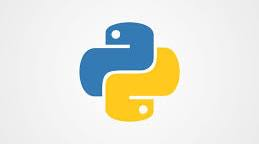
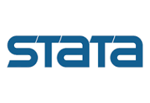
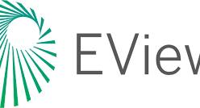
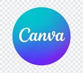
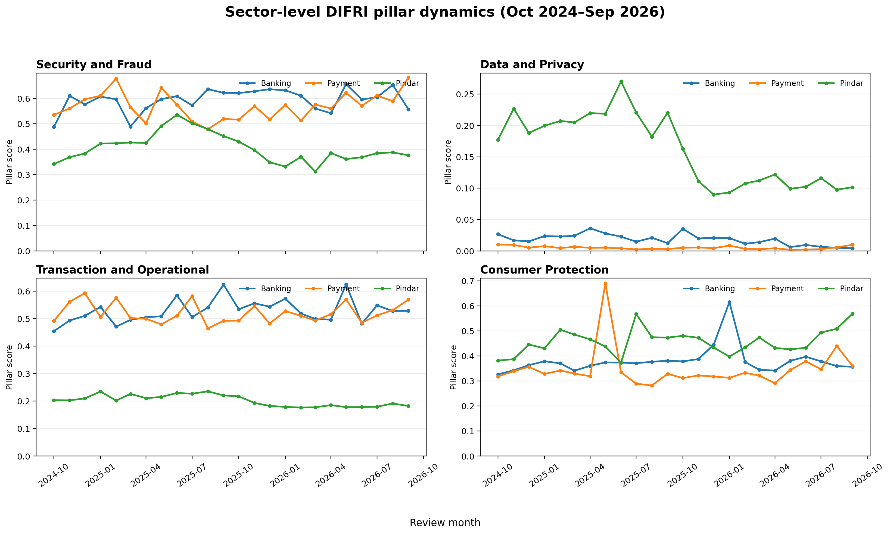
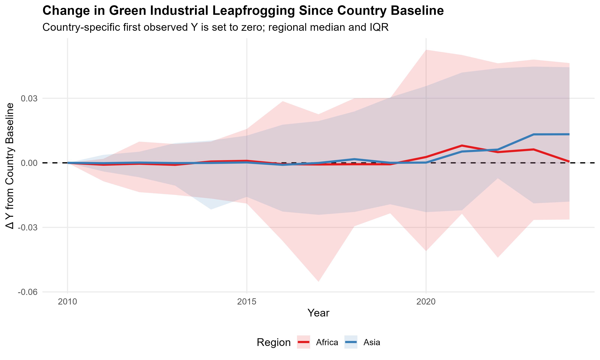

RECOGNITION / 01
1st Place — SEA-SUKA 5.0 Call for Paper
ForSEBI UIN Sunan Kalijaga · June 2026
 PROFILE / 01
PROFILE / 01
Research · Data · Economics
Hello, I'm
Junior Data Analyst | Research Enthusiast
Final-year student of Islamic Financial Management at UIN Sunan Gunung Djati Bandung, combining quantitative research, economic analysis, and data storytelling to turn complex evidence into clear insights.


Curiosity-led research
Evidence-based analysis
Practical data solutions
Academic background
Bachelor's Degree — Islamic Financial Management
UIN Sunan Gunung Djati Bandung · Bandung, Indonesia
Final-year student
Tools of the trade
Software used across quantitative analysis, econometric modelling, research writing, and visual communication.

Python
Stata
EViews
CanvaProfile
I am a final-year Islamic Financial Management student at UIN Sunan Gunung Djati Bandung with a strong interest in quantitative research, applied economics, and data analytics. My work sits at the intersection of Islamic finance, macroeconomic development, sustainability, and public policy.
Across research projects, I have worked with large-scale datasets, econometric methods, machine-learning workflows, and interactive dashboards. I use Python, R, Stata, and EViews to structure data, test empirical relationships, evaluate model behaviour, and communicate findings through clear visual outputs.
My research experience includes governance risk and contagion monitoring, digital financial inclusion, and green industrial transformation across Asia and Africa. Alongside analytical work, I have contributed to academic writing, conference papers, and research competitions. I am interested in turning rigorous analysis into insights that are useful for researchers, institutions, and decision-makers.
Work Experience & Research Contributions
Academic & Policy Research
Forum Studi Ekonomi Islam (FORDES)
PT Tumbuh Global Indonesia
Selected work / live dashboards
Explore the interactive research dashboards published in this portfolio repository. Select a project cover to open its live dashboard.

01 / FINANCIAL INCLUSIONInteractive research dashboard
Interactive dashboard for the Digital Financial Inclusion and Resilience Index (DIFRI) research project.
Open live dashboard 02 / GOVERNANCE RISK
02 / GOVERNANCE RISKNetwork & early-warning analytics
Research dashboard exploring governance contagion dynamics, connected risks, and empirical patterns.
Open live dashboard
03 / SUSTAINABILITYCross-country empirical analysis
Interactive analytical project on green industrial transformation and sustainability pathways across regions.
Open live dashboardRecognition / selected certificates
A visual record of academic competitions, research presentations, and institutional recognition.
ForSEBI UIN Sunan Kalijaga · June 2026
Universitas Airlangga · 2025
PEBS FEB UI & BPKH · Junior Category
Universitas Suryakancana · May 2025 · Team Inkfusion
Brisma Fest 4.0 · UIN Sunan Gunung Djati Bandung · May 2026
Islamic Economic Days XI · 2026
Universitas Islam Internasional Indonesia · May 2025
Students Category · August 2025
CIES · August 2025
SCIE mics · Universitas Pendidikan Indonesia · June 2025 · Team Inkfusion
Research output / 01—14
Journal articles and conference proceedings across Islamic finance, sustainability, macroeconomics, and regional development.